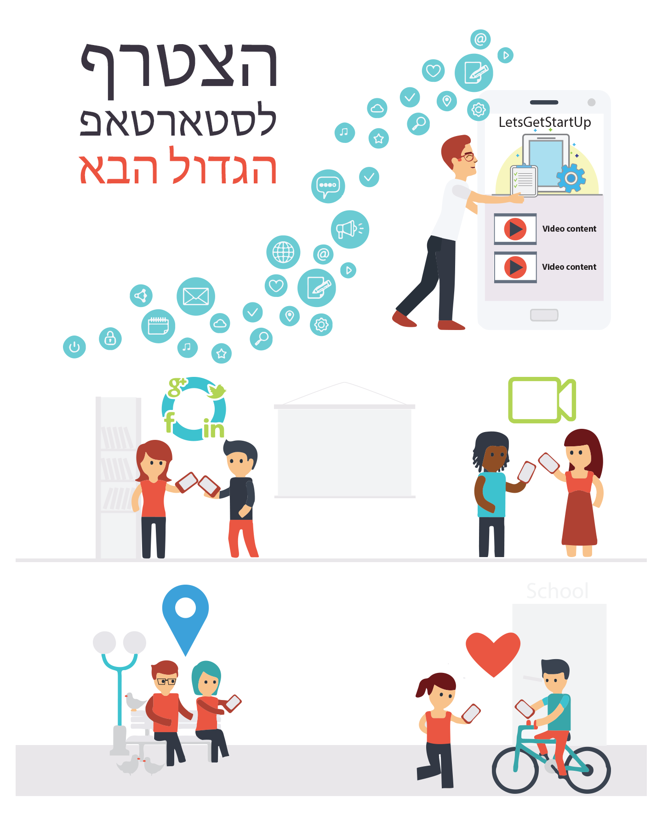

<ons-page>
	<ons-toolbar>
		<div class="left">
			<ons-toolbar-button ng-click="menu.toggleMenu()"><ons-icon icon="fa-bars"></ons-icon></ons-toolbar-button>
		</div>
		<div class="center">דף הבית</div>
		<div class="right" style="padding:12px;">שלום, {{user_login}}</div>
	</ons-toolbar>
	<a href="http://www.letsgetstartup.com/app-cloud/wp-content/Schools-debug.apk" style="display:block;background:#00b822;padding:20px;margin:0 auto;color:#fff;text-decoration:none;">לחץ כאן להורדת אפליקצית נקודות עניין</a>
	</img>
</ons-page>